Appendix A — Results when optimizing a neural network observable and binning simultaneously
A.1 5-bin observable
Metrics
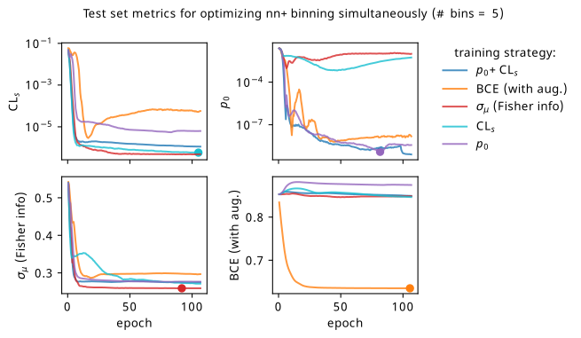
Histograms
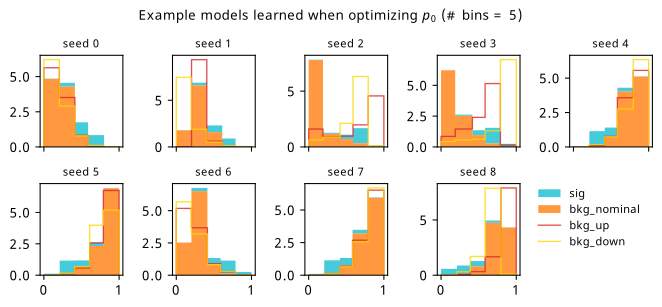
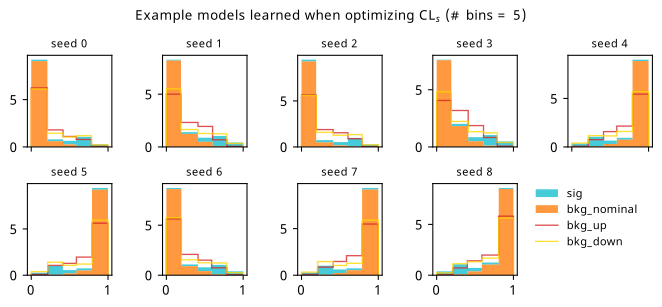
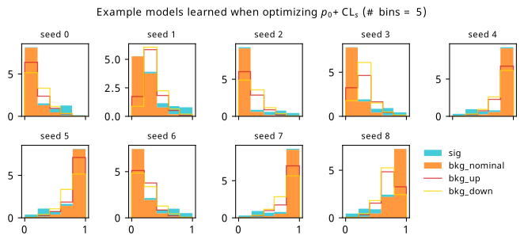
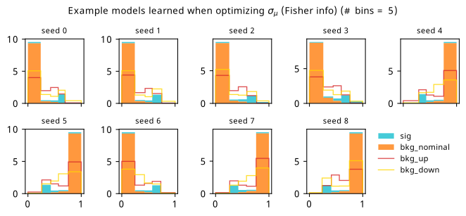
Neural network contours in data space
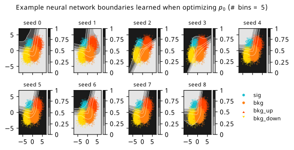
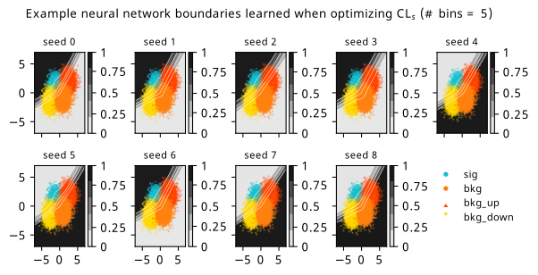
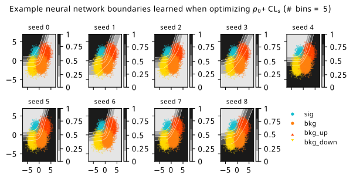
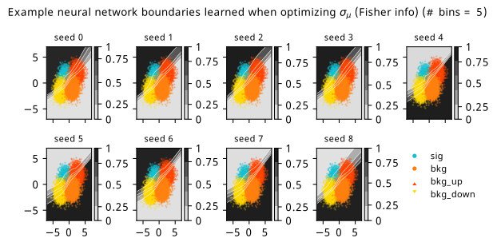
A.2 20-bin observable
Metrics
Histograms
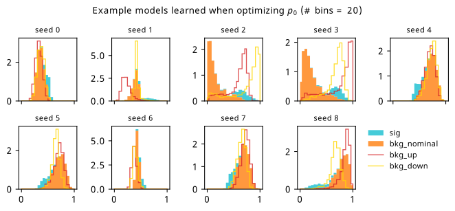
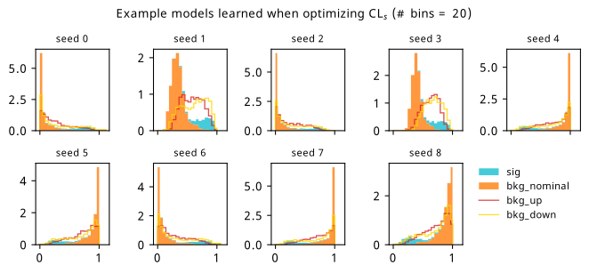
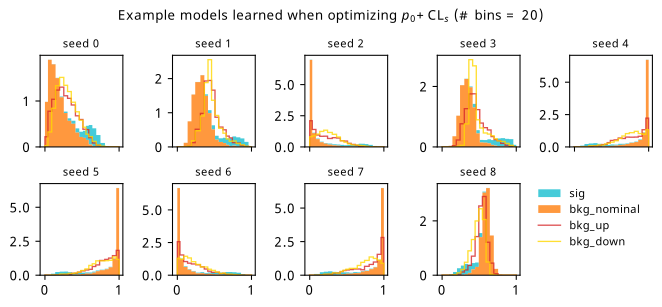
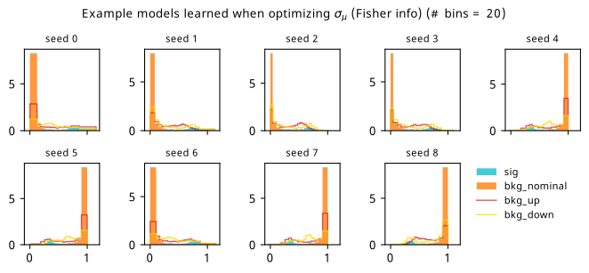
Neural network contours in data space
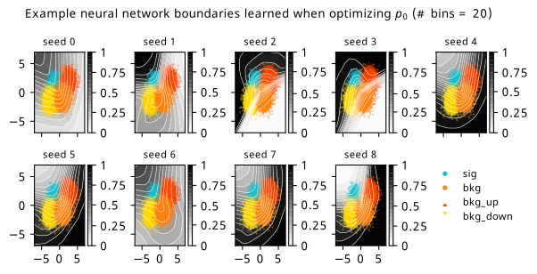
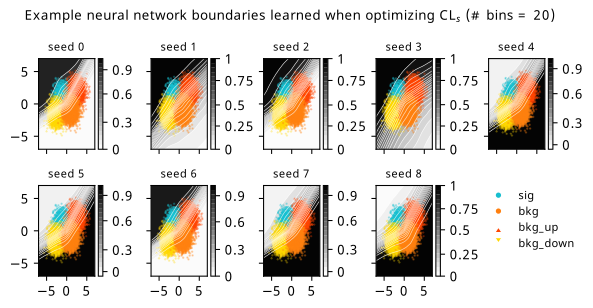
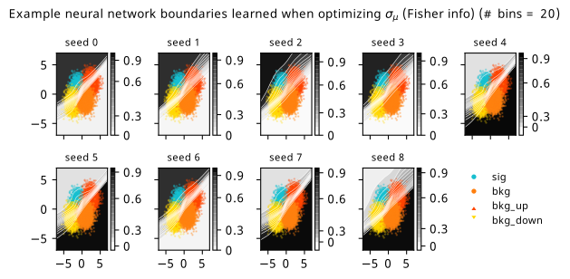